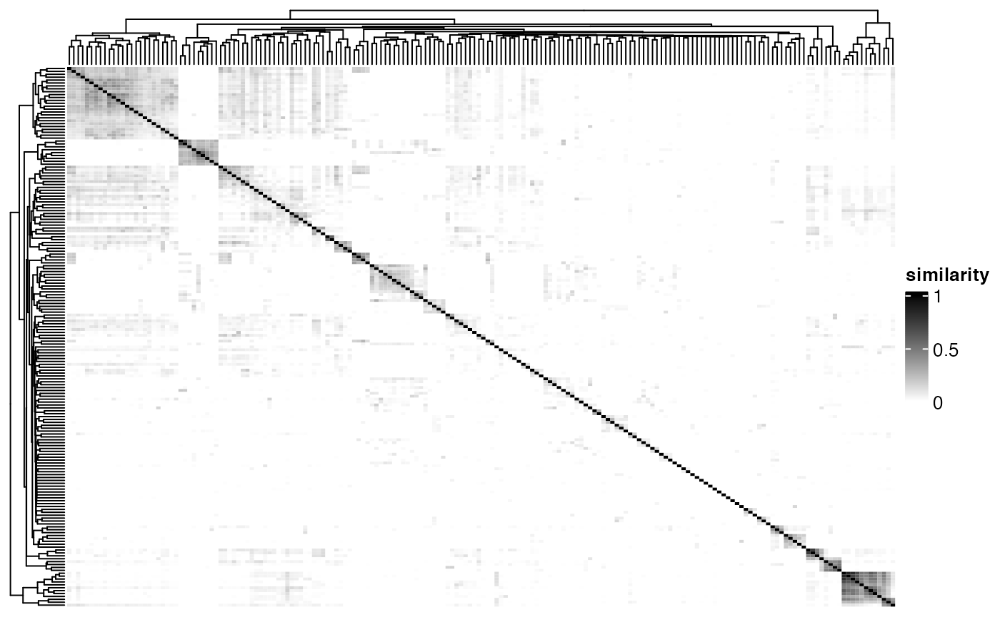

vignettes/pathway_similarities.Rmd
pathway_similarities.RmdPathway similarities describe how similar two pathways are (you’re welcome). For example, when interpreting pathways as gene sets, one could count how many genes are shared between two sets. Many more sophisticated methods, such as the Jaccard index, exist (Gu and Huebschmann 2021).
pareg provides various pre-computed similarity measures (jaccard, overlap_coefficient, semantic) for selected pathway databases (C2@CP:KEGG, C5@GO:BP) in matrix form.
mat <- pathway_similarities$`C2@CP:KEGG`$jaccard %>%
as_dense_sim()
mat[1:3, 1:3]## hsa00970 hsa05340 hsa04621
## hsa00970 1 0.000000000 0.000000000
## hsa05340 0 1.000000000 0.008196721
## hsa04621 0 0.008196721 1.000000000
Heatmap(
mat,
name = "similarity",
col = colorRamp2(c(0, 1), c("white", "black")),
show_row_names = FALSE,
show_column_names = FALSE
)
On the Gene Ontology’s Biological Process subcategory, we can observe how much pathway similarity measures can differ from each other.
df_sim <- pathway_similarities$`C5@GO:BP` %>%
map_dfr(function(mat) {
if (is.null(mat)) {
return(NULL)
}
mat %>%
as_dense_sim() %>%
as.data.frame %>%
rownames_to_column() %>%
pivot_longer(-rowname)
}, .id = "measure") %>%
filter(value > 0) %>%
pivot_wider(names_from = measure, values_from = value) %>%
select(-rowname, -name)
ggpairs(df_sim) +
theme_minimal()## Warning: Removed 514552 rows containing non-finite values (stat_density).## Warning in ggally_statistic(data = data, mapping = mapping, na.rm = na.rm, :
## Removed 514552 rows containing missing values## Warning in ggally_statistic(data = data, mapping = mapping, na.rm = na.rm, :
## Removed 586334 rows containing missing values## Warning: Removed 514552 rows containing missing values (geom_point).## Warning: Removed 514552 rows containing non-finite values (stat_density).## Warning in ggally_statistic(data = data, mapping = mapping, na.rm = na.rm, :
## Removed 586334 rows containing missing values## Warning: Removed 586334 rows containing missing values (geom_point).
## Removed 586334 rows containing missing values (geom_point).## Warning: Removed 71782 rows containing non-finite values (stat_density).## R version 4.1.3 (2022-03-10)
## Platform: x86_64-apple-darwin17.0 (64-bit)
## Running under: macOS Big Sur/Monterey 10.16
##
## Matrix products: default
## BLAS: /Library/Frameworks/R.framework/Versions/4.1/Resources/lib/libRblas.0.dylib
## LAPACK: /Library/Frameworks/R.framework/Versions/4.1/Resources/lib/libRlapack.dylib
##
## locale:
## [1] en_US.UTF-8/en_US.UTF-8/en_US.UTF-8/C/en_US.UTF-8/en_US.UTF-8
##
## attached base packages:
## [1] grid stats graphics grDevices utils datasets methods
## [8] base
##
## other attached packages:
## [1] pareg_0.99.5 tfprobability_0.15.0 tensorflow_2.8.0
## [4] GGally_2.1.2 circlize_0.4.14 ComplexHeatmap_2.10.0
## [7] forcats_0.5.1 stringr_1.4.0 dplyr_1.0.8
## [10] purrr_0.3.4 readr_2.1.2 tidyr_1.2.0
## [13] tibble_3.1.6 ggplot2_3.3.5 tidyverse_1.3.1
## [16] BiocStyle_2.22.0
##
## loaded via a namespace (and not attached):
## [1] readxl_1.3.1 shadowtext_0.1.1 backports_1.4.1
## [4] fastmatch_1.1-3 systemfonts_1.0.2 plyr_1.8.7
## [7] igraph_1.2.11 splines_4.1.3 BiocParallel_1.28.3
## [10] listenv_0.8.0 tfruns_1.5.0 GenomeInfoDb_1.30.1
## [13] digest_0.6.29 GOSemSim_2.20.0 foreach_1.5.2
## [16] htmltools_0.5.2 GO.db_3.14.0 viridis_0.6.2
## [19] fansi_1.0.3 magrittr_2.0.2 memoise_2.0.1
## [22] cluster_2.1.2 doParallel_1.0.17 tzdb_0.2.0
## [25] Biostrings_2.62.0 globals_0.14.0 graphlayouts_0.8.0
## [28] modelr_0.1.8 matrixStats_0.61.0 pkgdown_2.0.2
## [31] prettyunits_1.1.1 colorspace_2.0-3 blob_1.2.2
## [34] rvest_1.0.2 ggrepel_0.9.1 textshaping_0.3.6
## [37] haven_2.4.3 xfun_0.30 RCurl_1.98-1.6
## [40] crayon_1.5.0 jsonlite_1.8.0 zeallot_0.1.0
## [43] iterators_1.0.14 glue_1.6.2 polyclip_1.10-0
## [46] gtable_0.3.0 zlibbioc_1.40.0 XVector_0.34.0
## [49] GetoptLong_1.0.5 shape_1.4.6 BiocGenerics_0.40.0
## [52] scales_1.1.1 DOSE_3.20.1 DBI_1.1.2
## [55] Rcpp_1.0.8.3 viridisLite_0.4.0 progress_1.2.2
## [58] clue_0.3-60 reticulate_1.24-9000 bit_4.0.4
## [61] proxy_0.4-26 stats4_4.1.3 httr_1.4.2
## [64] fgsea_1.20.0 RColorBrewer_1.1-2 ellipsis_0.3.2
## [67] pkgconfig_2.0.3 reshape_0.8.8 farver_2.1.0
## [70] sass_0.4.1 dbplyr_2.1.1 utf8_1.2.2
## [73] labeling_0.4.2 reshape2_1.4.4 tidyselect_1.1.2
## [76] rlang_1.0.2 AnnotationDbi_1.56.2 munsell_0.5.0
## [79] cellranger_1.1.0 tools_4.1.3 cachem_1.0.6
## [82] cli_3.2.0 generics_0.1.2 RSQLite_2.2.11
## [85] broom_0.7.12 evaluate_0.15 fastmap_1.1.0
## [88] yaml_2.3.5 ragg_1.1.3 bit64_4.0.5
## [91] knitr_1.37 fs_1.5.2 tidygraph_1.2.0
## [94] KEGGREST_1.34.0 ggraph_2.0.5 future_1.24.0
## [97] whisker_0.4 DO.db_2.9 xml2_1.3.3
## [100] compiler_4.1.3 rstudioapi_0.13 png_0.1-7
## [103] reprex_2.0.1 tweenr_1.0.2 bslib_0.3.1
## [106] stringi_1.7.6 highr_0.9 desc_1.4.1
## [109] lattice_0.20-45 Matrix_1.4-0 keras_2.8.0
## [112] nloptr_2.0.0 vctrs_0.3.8 pillar_1.7.0
## [115] matrixLaplacian_1.0 lifecycle_1.0.1 furrr_0.2.3
## [118] BiocManager_1.30.16 jquerylib_0.1.4 GlobalOptions_0.1.2
## [121] data.table_1.14.2 bitops_1.0-7 qvalue_2.26.0
## [124] R6_2.5.1 bookdown_0.25 gridExtra_2.3
## [127] IRanges_2.28.0 parallelly_1.30.0 codetools_0.2-18
## [130] MASS_7.3-55 assertthat_0.2.1 rprojroot_2.0.2
## [133] rjson_0.2.21 withr_2.5.0 GenomeInfoDbData_1.2.7
## [136] S4Vectors_0.32.3 parallel_4.1.3 hms_1.1.1
## [139] rmarkdown_2.13 ggforce_0.3.3 Biobase_2.54.0
## [142] scatterplot3d_0.3-41 lubridate_1.8.0 base64enc_0.1-3